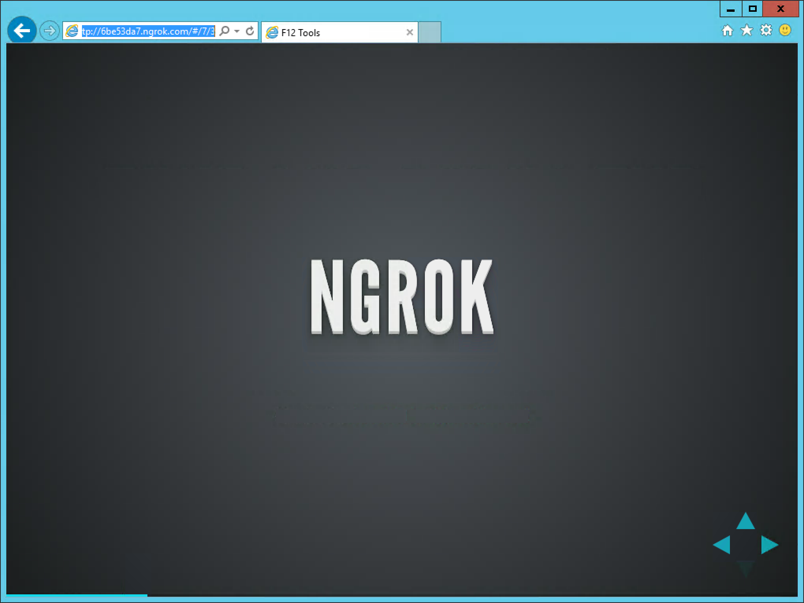

Tune and Debug the Responsive Web
A Guide to F12 Debugging
Created by Jared Faris / @jaredthenerd
Hook 1
TODO
Hook 2
TODO
Hook 3
TODO
Someone Moved Your Cheese
TODO
Today's Topics
- HTML Inspection
- CSS Modifications
- JavaScript Debugging
- Mobile/Responsive tools
- Performance Tuning
Disable Caching
(Chrome) F12 -> F1

(Firefox) Gear -> Advanced Settings

(IE) Internet Explorer

IE You Said?
IE Market Share

But I Don't Run Windows
Check out Remote IENgrok
HTML Inspection
Basic manipulations
- Search
- Insert
- Delete
- Edit as HTML
- 1
- 2
- 4 needs deleted
- 4
- Search for me
- 6 edit html
Copying
- Copy HTML (All Browsers)
- Copy XPath (ugh) (Chrome)
- Copy CSS Selector (Chrome)
- Copy Unique Selector (Firefox)
CSS Modifications
Hitting Refresh Sucks
- Complex, client-side workflows
- Slow data loads
General CSS Tweaking
Oh no, the design of this page isn't quite right. It should be two column!"- Designer
(Chrome) Styles

(Firefox) Rules

(IE) Styles

What's this computed thing?
All the details on what an element is doing.Inherited Styles

Inherited Styles 2

Messing With Hovers
You can force hover/active/focus(Chrome) Toggle Element State

(Firefox) States

(IE) Toggle Element State

So What Changes Did I Make Again?
Firefox and IE will highlight your changesPrevious Demo
Firefox and IE
Firefox
Look for the green bar

IE
Look for the green bar

IE Bonus Feature
Changes Tab!

JavaScript Debugging
Debugger
Supported in all modern browsers. Code based breakpoint.Example!
Consoles
Run arbitrary javascript, debug it and view objects!Chrome

Firefox

Internet Explorer

Callstack
Callstack Demo
(Chrome) Callstack

(Firefox) Callstack

(Firefox) Callrow?

(IE) Callstack

Breaking
Just My Code
Just My Code/Blackboxing Demo!
(Chrome) Blackboxing

(Firefox) Black Boxing

(IE) Just My Code

Magic Time
Let's open some minified code
(Chrome) {} Pretty Print

(Firefox) {} Prettify Source

(IE) {} Pretty Print

Finding Events
(Chrome) Event Listeners

IE
Vertical Slides
Slides can be nested inside of other slides, try pressing down.
Basement Level 1
Press down or up to navigate.
Basement Level 2
Cornify

Basement Level 3
That's it, time to go back up.
Slides
Not a coder? No problem. There's a fully-featured visual editor for authoring these, try it out at http://slid.es.
Point of View
Press ESC to enter the slide overview.
Hold down alt and click on any element to zoom in on it using zoom.js. Alt + click anywhere to zoom back out.
Works in Mobile Safari
Try it out! You can swipe through the slides and pinch your way to the overview.
Marvelous Unordered List
- No order here
- Or here
- Or here
- Or here
Fantastic Ordered List
- One is smaller than...
- Two is smaller than...
- Three!
Transition Styles
You can select from different transitions, like:
Cube -
Page -
Concave -
Zoom -
Linear -
Fade -
None -
Default
Themes
Reveal.js comes with a few themes built in:
Default -
Sky -
Beige -
Simple -
Serif -
Night
Moon -
Solarized
* Theme demos are loaded after the presentation which leads to flicker. In production you should load your theme in the <head> using a <link>.
Global State
Set data-state="something" on a slide and "something"
will be added as a class to the document element when the slide is open. This lets you
apply broader style changes, like switching the background.
Custom Events
Additionally custom events can be triggered on a per slide basis by binding to the data-state name.
Reveal.addEventListener( 'customevent', function() {
console.log( '"customevent" has fired' );
} );
Slide Backgrounds
Set data-background="#007777" on a slide to change the full page background to the given color. All CSS color formats are supported.
Image Backgrounds
<section data-background="image.png">Repeated Image Backgrounds
<section data-background="image.png" data-background-repeat="repeat" data-background-size="100px">Background Transitions
Pass reveal.js the backgroundTransition: 'slide' config argument to make backgrounds slide rather than fade.
Background Transition Override
You can override background transitions per slide by using data-background-transition="slide".
Clever Quotes
These guys come in two forms, inline:
“The nice thing about standards is that there are so many to choose from”
and block:
“For years there has been a theory that millions of monkeys typing at random on millions of typewriters would reproduce the entire works of Shakespeare. The Internet has proven this theory to be untrue.”
Pretty Code
function linkify( selector ) {
if( supports3DTransforms ) {
var nodes = document.querySelectorAll( selector );
for( var i = 0, len = nodes.length; i < len; i++ ) {
var node = nodes[i];
if( !node.className ) {
node.className += ' roll';
}
}
}
}
Courtesy of highlight.js.
Intergalactic Interconnections
You can link between slides internally, like this.
Fragmented Views
Hit the next arrow...
... to step through ...
any type- of view
- fragments
Fragment Styles
There's a few styles of fragments, like:
grow
shrink
roll-in
fade-out
highlight-red
highlight-green
highlight-blue
current-visible
highlight-current-blue
Spectacular image!

Export to PDF
Presentations can be exported to PDF, below is an example that's been uploaded to SlideShare.
Take a Moment
Press b or period on your keyboard to enter the 'paused' mode. This mode is helpful when you want to take distracting slides off the screen during a presentation.